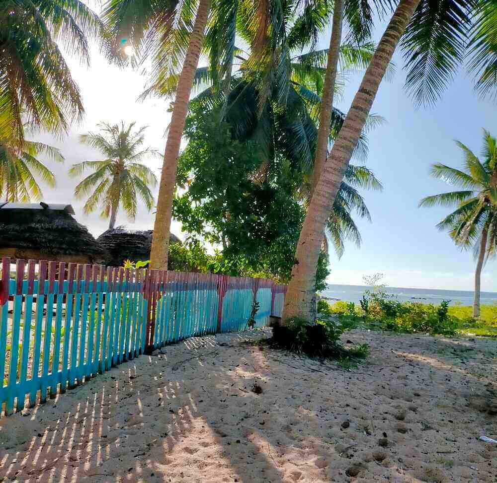

Teuila Kids Klothing
Original handprinted Island styled clothing for kids and teenagers
Buy nowTeuila (pronounced Tear-oo-ee-lar) is the national flower of Samoa.
While travelling to the beautiful Samoa Islands you will notice the spectacular vibrant red of the Teuila flower in bloom. Teuila means red ginger of the Samoan ginger plant. Near pristine shades of blue oceans and white warm sand, the Teuila is surrounded by fresh green foliage and black volcanic rock. These colours are captured in the handprinted fabrics at TKK.
Variety
Bright colours that remind you of island time and island life. The pride of the pacific. Choose from a variety of Island childrens wear.
Originality
Comfortable easy breezy island styled original prints. Walk your fingers through our online shop and have a relaxing no fuss experience.